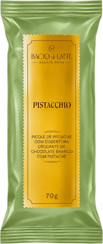
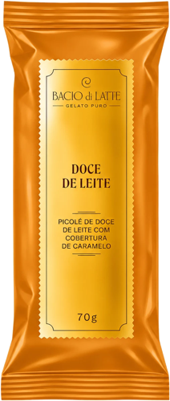
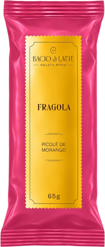
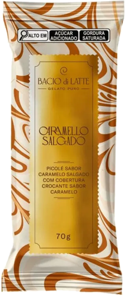

Mais de 200 gelaterias.
Gelato batido todo dia.
Agora, 12 mil freezers
de supermercado.
Nenhum deles
tem balconista.
Bacio di Latte · MPVD 2027
A mesma gelateria em 12 mil lugares.
Um sistema de PDV que leva o padrão Bacio a cada freezer, corredor e carrinho, e prova isso com dados.
O que vamos discutir hoje
Sete capítulos, da tensão de mercado até um piloto medido.
01ContextoA Bacio, o mercado e o premium sem dono
02ShopperSegundos diante do freezer
03InsightO que a escala esconde
04EstratégiaUm sistema, cinco pilares
05SoluçãoKV e 21 peças aprovadas
06RastreamentoOne Shot e On Timing
07Próximos passosCronograma, gate e piloto
Nossa leitura do briefing
O pedido são seis entregas. O desafio é um só: o padrão Bacio fora da loja.
Problema aparenteSeis entregas de PDV: KV, rastreamento, QR, planograma, ambulante e guia
Problema realFazer a gelateria chegar intacta a 12 mil pontos que a Bacio não controla
MarcaNão virar “mais um pote caro”
ShopperAchar o sabor em segundos
OperaçãoExecução de terceiros e cadeia do frio
ComercialOcupar o premium sem dono
Critério de sucesso
ReconhecívelExecutado igualMedidoEscalável
Contexto · a Bacio e o mercado
A Bacio cresce como rede de varejo dentro de um mercado grande e pulverizado.
Bacio di Latte
200+lojas próprias, sem franquias
~30%de crescimento ao ano desde 2023
R$ 1,5 bimeta de faturamento em 2026
12 milPDVs como meta, partindo de ≈ 8 mil
Sorvete no Brasil
R$ 15 bi+faturamento anual do setor
11 mil empresas
92% micro ou pequenas
+50%nas vendas em picos do verão 2024/2025
Fontes: Exame (2025); MilkPoint e Portal Mais 360 (2026); ABIS, Retrospectiva 2025. Metas e PDVs declarados pela empresa.
Concorrência · mapa de posicionamento
O premium ficou sem dono, e ninguém une escala e gelateria no freezer.
espaço livre
menos escala no PDVmais escala no PDV →
experiência de gelateria →
Magnum / Kibon
Froneri
Premium de supermercado
Gelaterias com loja
Häagen-Dazs (saiu em 2026)
Bacio hoje
Bacio 2027
Häagen-Dazs saiu do BrasilAgosto de 2026, após quase 30 anos. Fica um shopper premium sem referência.
Magnum é dona do sistemaLED no freezer, IA por foto para pedido, expansão para farmácias.
A Bacio pode ter os doisÉ a única com 200+ lojas para provar que o produto existe fora do freezer.
Leitura qualitativa 75LAB. Fontes: Bloomberg Línea e Forbes Brasil (2026); Mundo do Marketing (2026); Mercado&Consumo (set/2026).
Shopper · jornada no freezer
A decisão acontece em segundos, com a porta aberta e o frio no rosto.
1EstímuloFreezers todos iguaisFreezer-vitrine
2InteresseSabores misturadosColuna por sabor
3InteraçãoPorta aberta, pouco tempoQR na régua
4DecisãoPreço sem contextoPicolé como porta de entrada
5AçãoRuptura do saborFoto e reposição guiada
6ExperiênciaGelo após choque térmicoSelo −18 °C e sensor
7RecompraA marca someQR leva à loja
● barreira● resposta do sistema
Análise 75LAB. Jornada simplificada do shopper de supermercado.
A tensão: escala × padrão · o insight
No supermercado, a Bacio é julgada pelo freezer que ela não controla.
choque térmico→cristais de gelo→a culpa é da marca
A loja vende a promessa; o freezer cobra o preço.Picolé de 70 g a R$ 23,99–24,99 no varejo.
O shopper escolhe sabor, não formato.No balcão: “pistache ou doce de leite?”
O lançamento é evento na loja e mudo no freezer.5 mil Ciocchinos grátis na estreia.
Leitura 75LAB, a validar com dados de qualidade e SAC da Bacio. Preços: Angeloni, Prado, Zona Sul (nov/2026); Exame (2025).
Estratégia · como podemos…
…fazer cada freezer e carrinho ser reconhecido, executado e medido como uma gelateria Bacio?
DeUm pote caro entre outros, com execução variável
ParaGelaterias de bolso, por sabor e auditáveis
Através deUm sistema em torno do freezer-vitrine conectado
01 ReconhecerKV e enxoval
02 EscolherPlanograma e mix
03 GarantirGuia e rastreamento
05 AprenderPainel de dados
Território criativo
A vitrine vai até você.
Todo freezer Bacio é uma vitrine de gelateria, não um armário de potes. A cor da coluna faz o papel da cuba.
Camada de provaBattuto Ogni Giorno, materializada no selo −18 °C
A solução · enxoval aprovado
O freezer vira vitrine.
21peças aprovadas, do painel do freezer ao guarda-sol
6freezer vertical
8horizontal e ilha
5corredor
2praia
Imagens aprovadas em 12/nov/2026. Lote 5 (wobbler de lançamento e versão condomínio) suspenso pelo cliente.
01 Reconhecer · KV e enxoval
Um KV, 21 peças, cada uma com medida e lugar.
Freezer vertical VF50Horizontal e ilhaCorredor e praiaClique para ampliar e navegar
 P01
P01Painel iluminado64 × 23 cm
 P02
P02Envelopamento lateral78 × 190 cm
 P03
P03Moldura com seloperfil 5 cm
 P04
P04Régua de sabores54 × 4 cm
 P05
P05Wobbler de batenteø 14 cm
 PDV-1
PDV-1Freezer-vitrinehero
 P06
P06Testeira NF2078 × 38 cm
 P07
P07Testeira NF40138 × 40 cm
 P08
P08Frente NF40138 × 45 cm
 P09
P09Moldura das tampasPETG 1,5 mm
 P10
P10Divisórias por sabor50 × 18 cm
 P11
P11Ilha de verão185 × 87 × 85 cm
 PDV-2
PDV-2NF40 aplicadoP07 a P10
 PDV-3
PDV-3Kit Cluster Crégua, divisórias, faixa
 P13
P13Stopper em arcoproporção 1:2
 P15
P15Faixa de gôndola93 × 4 cm
 P16
P16Adesivo de pisoø 60 cm
 P17
P17Marcador de formato12 × 5 cm
 PDV-4
PDV-4Corredor aplicadoVF50 + NF40
 PDV-5
PDV-5Carrinho de praia80 × 50 × 60 cm
 P19
P19Guarda-sol e cardápioø 180 · 30 × 40 cm
KV aprovado (arquivo KV-Baccio-2). Medidas marcadas “a confirmar” dependem de medição de campo.
02 Escolher · planograma e clusters
No freezer, a escolha volta a ser por sabor, em três tamanhos de kit.
PistacchioDoce de LeiteMorangoCaramello
1Topo · quatro sabores em bloco
2Olhos · lançamento e potes-herói
3Mãos · picolés de 70 g
4Meio-baixo · potes clássicos
5Base · estoque contra ruptura
A · FlagshipFreezer-vitrine + ilha P11 + stopper e piso
B · IntermediárioVF50 com P01 a P05 + testeira P06
C · CompactoRégua, divisórias, faixa e selo, sem freezer próprio
Funciona em 1 loja ou em 12 mil: muda o kit, não o padrão.
Planograma para VF50 de 1 porta; no piloto, teste A/B “por sabor” × “por formato”. Clusters finais a partir do inventário de freezers.
Ambulante e QR Code
Fora do freezer, a gelateria continua: na areia e no celular.




Preço igual ao da loja, visual de vitrine e só ocasiões premium. Carrinho, guarda-sol, avental e cardápio com QR aprovados.
Vitrine do diaOs sabores deste freezer
Pistacchio
Doce de Leite
Morango
Ver o lançamento
Pergunta rápidaComo chegou o seu gelato?
CremosoCom gelo
Vai para o painel de qualidade deste ponto.
Perto de vocêProve o lançamento na loja
Bacio di Latte · 1,2 km
Abrir no mapa
QR dinâmico por pontoCada leitura identifica PDV, freezer e peça
O consumidor vira auditor“Como chegou o seu gelato?” em um toque
Volta ao balcãoLoja mais próxima e convite para provar
Modelo do canal ambulante (próprio, revenda ou evento) a definir com a Bacio. Telas do QR: simulação de interface.
Plano de Rastreamento 75LAB
Duas leituras do mesmo PDV: o dia da implantação e todos os dias depois.
Implantação conferida: foto georreferenciada, planograma por imagem, ID por peça e relatório por PDV.
Todos os dias: temperatura e porta (IoT), GPS de freezer e carrinho, ruptura por foto, QR e alertas.
DisplayFreezer, ilha, carrinho
DadosTemperatura, execução
InsightsOnde falha, o que vende
DecisãoReposição, verba, escala
Sensores e reconhecimento de imagem com parceiros especializados, validados no piloto antes de escalar.
Cronograma e mensuração
Imagens aprovadas. Agora medida, 3D, produção e um piloto com gate.
21 peçasaprovadas 12/novfeito
3D, executivo, artes3D + executivo + PSD
Produção e kittingprodução
O gate mede
Negócio · sell-out por freezer
Trade · kits e planograma
Qualidade · horas fora de −18 °C
Resultado esperado, não real: metas após a linha de base, com lojas-controle.
Sequência e dependências propostas. Durações e datas a definir com a Bacio conforme início e verba do MPVD 2027.
A mesma gelateria em 12 mil lugares.
Começando pelos primeiros 50.
Bacio di Latte
MPVD 2027 · KV e enxoval aprovados em 12/nov/2026. Fontes completas no README do projeto.